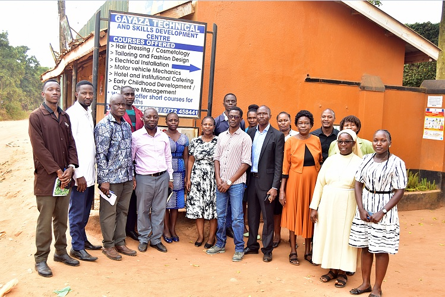
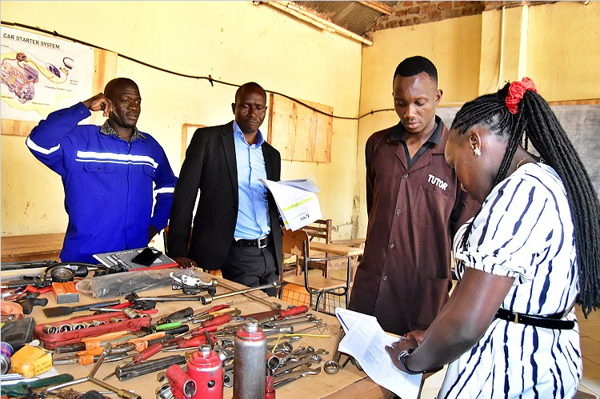

Technical Institutions in Wakiso Chapter Undergo TVET Licensing, Accreditation and Inspections

Technical and vocational institutions across Wakiso chapter have begun embracing the ongoing licensing and programme accreditation inspections being conducted by the TVET Council, in a move aimed at strengthening compliance, quality assurance, and standards in skills training across Uganda.
On Friday, 19th June 2026, Gayaza Technical and Skills Development Centre hosted officials from the TVET Council for a comprehensive inspection exercise conducted in line with the TVET Act. The assessment forms part of the Council’s broader national mandate to ensure that technical and vocational institutions meet the requirements for licensing and accreditation.
According to the school administration, the exercise was successfully conducted and provided an opportunity for the institution to demonstrate its readiness to operate within the standards set by the national regulatory framework.
During the inspection, assessors examined key aspects of the institution, including its infrastructure, training facilities, instructional equipment, staffing, and quality assurance systems. The exercise was designed to establish whether the centre meets the benchmarks required for official licensing and programme accreditation.

“The TVET Council is committed to ensuring this exercise is completed within the shortest timelines possible. This will enable the prompt licensing of all institutions that meet our recommendations.”
The Director of Gayaza Technical and Skills Development Centre, Mr. Ssemwogerere Deo, welcomed the exercise, describing it as a timely and necessary intervention in improving the quality and credibility of vocational education and training in Uganda.
He urged institutions across Uganda that are yet to be assessed to prepare adequately by reviewing their compliance status, documentation, staffing levels, training facilities, and internal quality assurance systems.
“As the TVET Council continues its inspection and accreditation activities across the Country, we encourage all institutions yet to be visited to proactively review their compliance status, documentation, training facilities, staffing requirements, and quality assurance systems in line with the recommendations of the TVET Act.”
Education stakeholders say the accreditation and licensing exercise is a critical step in strengthening technical education in Uganda, especially at a time when the country is placing growing emphasis on practical skills, youth employment, and workforce readiness.
Rather than being viewed as a mere regulatory obligation, the process is increasingly being seen as an opportunity for institutions to improve their capacity, boost public confidence, and align training programmes with national quality standards and labor market demands.
As the inspections continue across the Chapter, institutions are expected to take the exercise seriously and use the findings to improve service delivery, training quality, and compliance with the law.